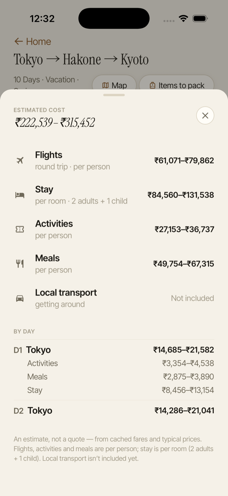
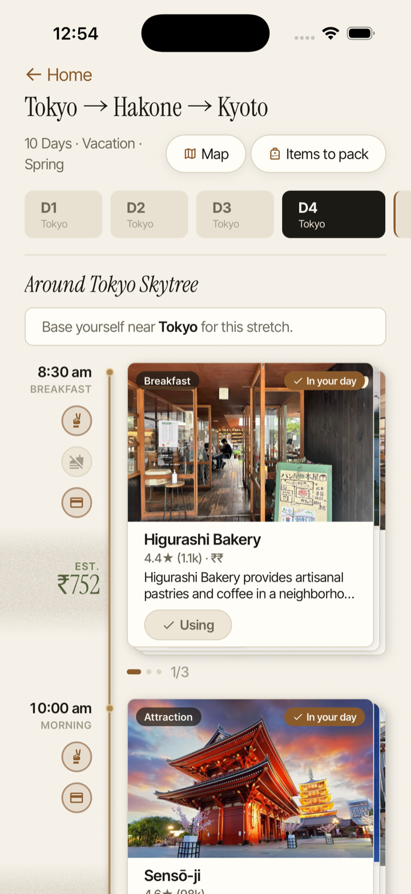
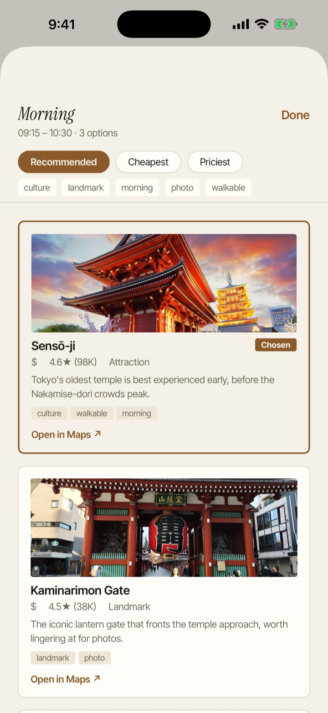
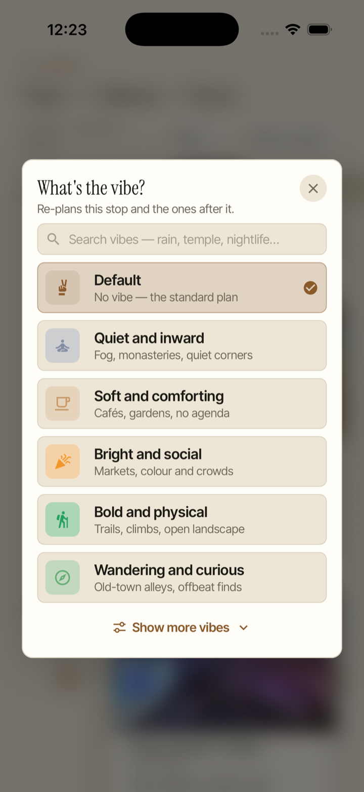
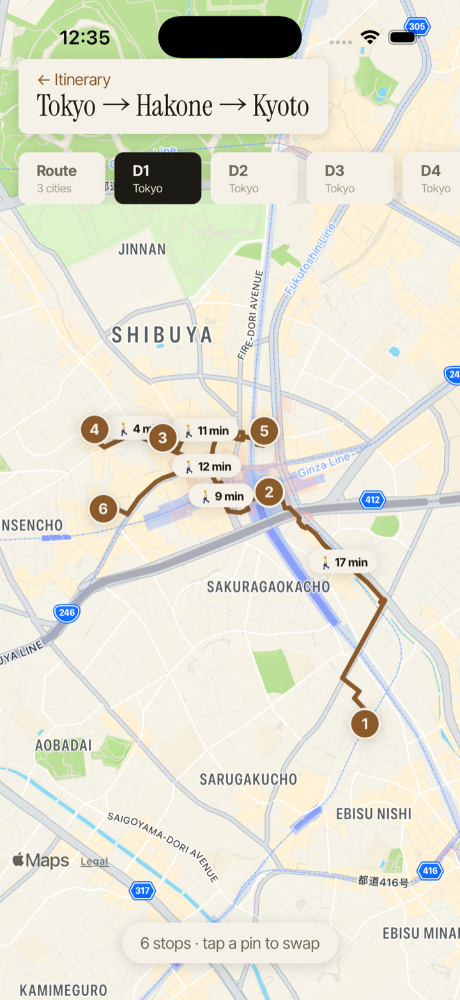
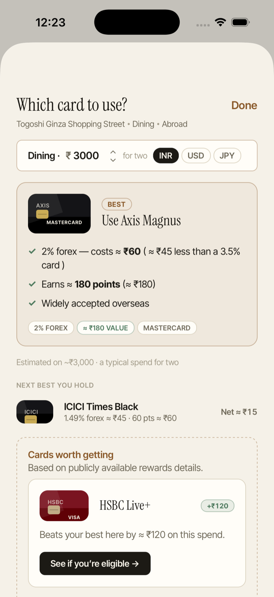
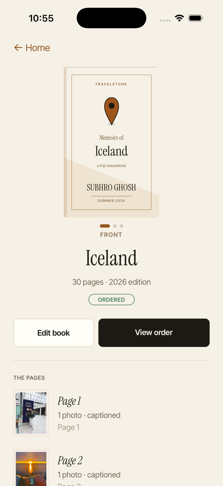
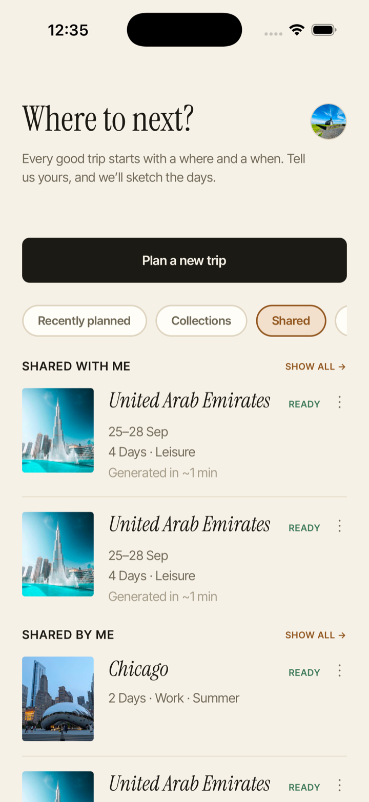
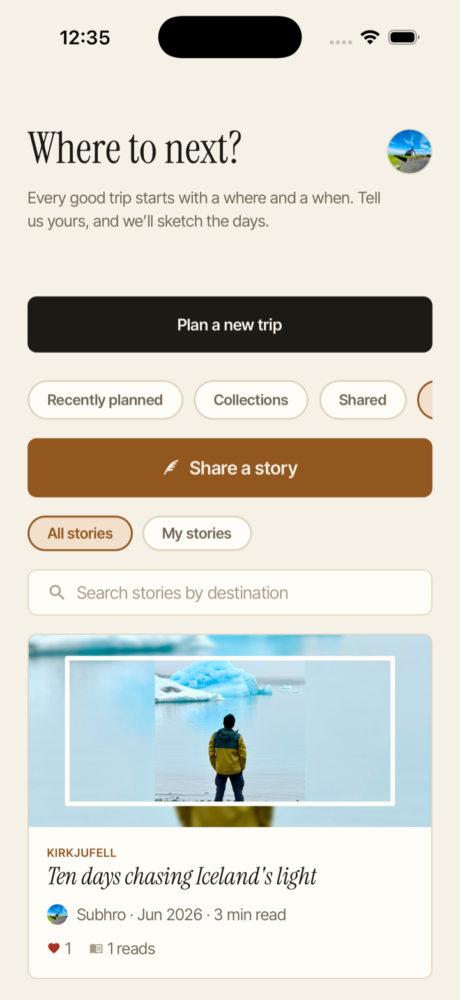
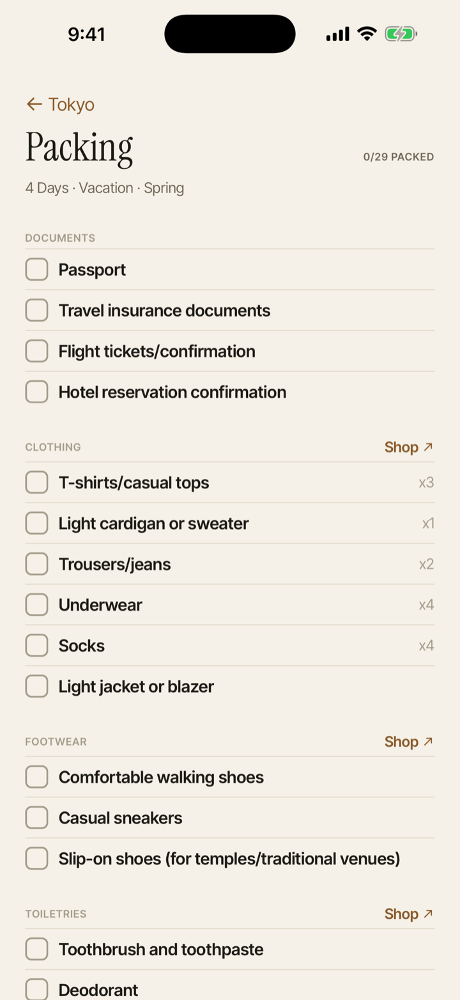

Know the cost up front
Flights, stays, activities and meals, estimated as a range before you book.
iPhone · iPad · Android
Travelstone turns a destination and a few details into a day-by-day itinerary — then lets you swap any stop and re-plan the day in seconds. Share it, story it, or turn it into a printed book.

Plan it, price it, shape it to your mood, and change it on the fly.

Flights, stays, activities and meals, estimated as a range before you book.

Pick an alternative and the day re-plans around it, times and all.

Choose a mood for a stop and the plan re-shapes to match how the day should feel.

Stops in order on the map, linked by real walking and driving times.

The best of your own cards to pay with at each stop, fees first, then rewards.

Turn the trip into a printed hardcover or softcover, page by page.

Friends get their own editable copy. Keep shared trips together in collections.

Write up a journey and publish it, or read other travellers' for ideas.

A checklist tuned to your destination, season and length, ready to tick off.
The small touches that make a plan feel like it was made for you.
Signature local dishes for each place you stop — a quick bite, a main and something sweet — with a spot to try them.
Not sure where to go? Tell Travelstone how long you have and it suggests destinations that fit — near and far.
Entry requirements for your destination country, with official links — so there are no surprises at the border.
Arrival and departure legs added around each stop, aware of whether you're flying, taking the train or driving.
Short, practical reads on getting more out of a trip — from spending abroad without the fees to planning a week in an afternoon.
The quiet 2–3% surcharge on overseas spending — what it is, and the simple ways to stop paying it.
Read the guide → Spending abroadA simple way to choose between the cards in your wallet on a trip — fees first, then rewards.
Read the guide → PlanningA calm, repeatable method for turning a destination into a day-by-day plan without the overwhelm.
Read the guide →Travelstone is an independent app for iPhone, iPad and Android that turns a destination and a few details into a day-by-day itinerary you can change on the fly — swap any stop and the day re-plans, see it as a map, pack from a list built for the trip, share it, write it up as a story, or keep it as a printed book. It's made by a small team who wanted planning to feel less like homework. Questions or feedback? We read every message at apps.subhro@gmail.com.
Tell Travelstone yours, and it'll sketch the days.